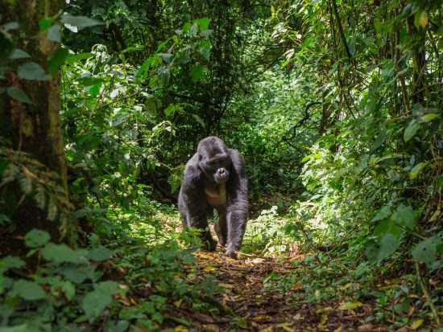
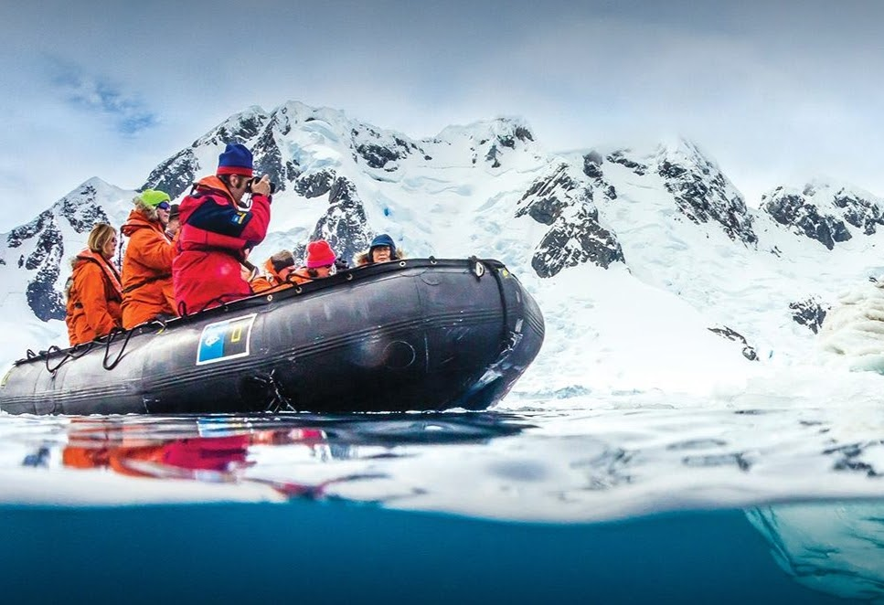
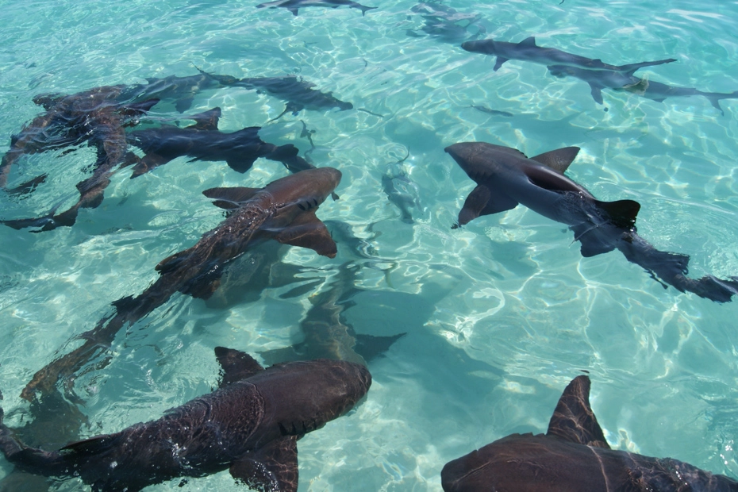

SYDNEY SALGADO TRAVEL AGENCY
ADVENTURES
Spot Gorillas in Uganda
 It’s very possible to get a smidge of primatologist Jane Goodall’s experience without making gorillas your life’s work. On Abercrombie & Kent’s 5-day Tailor-Made Uganda: Bwindi Impenetrable Forest journey, you’ll pick your adventure pleasure, whether you want to penetrate the lush-beyond-belief Bwindi “Impenetrable” Forest National Park in search of its resident tribes of gorillas, or tour the children’s wing at the local community hospital with A&K Philanthropy. When you see your first gorilla, remember it’s not King Kong: gorillas are typically sweet-tempered, even a bit bashful.
Book NowNational Geographic Guided Tour of Antartica
Experience Antarctica from every perspective using a range of exploration tools aboard the National Geographic Explorer, National Geographic Endurance, or National Geographic Resolution, including a remotely operated vehicle that captures footage of the ocean floor. Explore alongside a team of biologists, geologists, and undersea specialists who offer insights and engaging presentations throughout the trip. Get up close to icebergs, wildlife, and hard-to-reach places using our fleets of kayaks and Zodiacs. Observe a range of penguin and whale species, as well as seals and seabirds, and photograph them alongside our onboard photo instructor and National Geographic photographer.
Book NowSwimming with Nurse Sharks in the Bahamas
Swim with Nurse Sharks at the Compass Cay Marina on a Bahamas Day Tour to the Exumas. Whilst in the most part harmless to humans, these gracious marine animals have been acclimatised to visitors for many years and are known as pet sharks by the Marina's owners.
Book Now